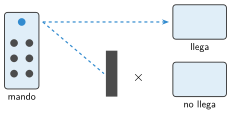

Manejar el robot con un mando
🤔 Pienso5 min
Qué hago aquí: Piensa un momento y contesta con lo que ya sabes. No pasa nada si no lo sabes: es para empezar.
Apunta un mando a la cámara del móvil y pulsa un botón. ¿Qué ves en la pantalla? ¿Y sin el móvil?
📖 Leo y aprendo15 min
Qué hago aquí: Lee despacio, mira los dibujos y los ejemplos, y quédate con la idea clave del final.
La luz infrarroja es una luz que no vemos. Las cámaras sí la ven . Los mandos la usan para enviar órdenes.

✏️ Hago25 min
Qué hago aquí: Haz las actividades en orden. Empieza siempre por las básicas.
Ordena: el robot se mueve · pulsas un botón · el receptor lee el código · el mando parpadea.
Programa el mBot: con la flecha de arriba avanza y si no pulsas nada, se para. ¿Funciona? Sí No
Añade la flecha de abajo para retroceder y las de los lados para girar. Escribe las velocidades que usas.
Maneja el robot desde 1, 3 y 6 metros, y con una mochila en medio. ¿Qué pasa?
Dos clases vecinas usan mandos a la vez y no se molestan. ¿Por qué?
✏️ Puedes responder escribiendo, con un dibujo o un esquema, o contándolo en voz alta.
🚀 Amplío (si quieres saber más)
Qué hago aquí: ¿Has terminado? Lee la curiosidad o elige el reto. Es voluntario.
Usa los botones 1, 2 y 3 del mando para elegir la velocidad: lenta, media o rápida. Pista: guarda la velocidad en una variable.
✅ Compruebo5 min
Qué hago aquí: Contesta sin mirar la ficha y marca cómo lo llevas.